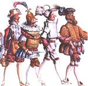

| Artist: | Manning |
| Title: | Cascade |
| Label: | Cyclops Cycl 105 |
| Length(s): | 64 minutes |
| Year(s) of release: | 2001 |
| Month of review: | [02/2002] |
| 1) | Walking In Cascade | 5.42 |
| 2) | By The Book (A Pop Song) | 6.20 |
| 3) | Tears In The Rain | 5.08 |
| 4) | Catholic Education | 5.48 |
| 5) | Hushabye Mountain | 3.03 |
| 6) | Lead Me Where You Will | 6.53 |
| 7) | Flight 19 | 5.56 |
| 8) | The Night And The Devil | 5.52 |
| 9) | Owning Up | 5.42 |
| 10) | The Time Of Our Lives | 6.11 |
| 11) | Winter | 7.35 |
By The Book (A Pop Song) has an approrpiate sub title, since it starts of as a pretty basic pop track. Pretty straight drumming, to the point of boring, up tempo stuff. Not all that interesting. This changes with what first sounds as the songs bridge, transforming in a pretty progressive track again, with some strong organ soloing, saving the track.
Tears In The Rain starts sort of unplugged, joined by some organ. Despite gaining in speed somewhat, the track remains pretty slow. Kind of nice, but not all that much.
Catholic Education is a mid tempo mid progressive track. The track builds up towards a guitar climax rather unstrikingly, which in a way increases its effect. Okay track.
Hushabye Mountain starts with Manning's voice over keyboards reminiscent of a musical box. The tone of voice, and the added carrying keyboards add to the dramatics of the track. Best so far.
Lead Me Where You Will starts pretty poppy, with some abrasive keyboard sax sounds, as well as an Ian Anderson flute. This opening is followed by a lengthy instrumental section with semi haunted hammond sound, with some more instruments layered across. Despite the fact that the hammond sounds are pretty much in the background, they strike me most. The track is closed by another short vocal section. Once again a track which starts too poppy for my tastes to end pretty nicely.
Flight 19 features some background vocals in a style that reminds me off Peter Hammill's. It starts off with a keyboarded church organ, seemingly building towards a climax that doesn't really come. Still the track is a good one, with a nice atmosphere (helped along by the piped organ).
The Night And The Devil is a somewhat strange track. The recurrring hammond organs on the one hand, with the kind of saxophone you would expect with Tom Waits, later to gain speed into VDGG's David Jackson and off to Air's Playground Love. I guess you could say that this track is less consistent than most material on this disc, but then again, it is pretty good.
Owning Up starts with a constricted voice, moving into vocals reminding of Hammill In Camera era. The track remains tranquil, sort of singer songwriter, with some more flute and acoustic guitars. Nice one.
The Time Of Our Lives is another singer songwriter track, with accordeon and panpipes sounds this time, which are pretty nice. The violin sounds towards the end are a bit too much, though. The over all effect is still okay.
Winter is a fitting title for the closing track, with its moody sound and dramatic vocal line, moving into a happy snow intermezzo, before really taking off.